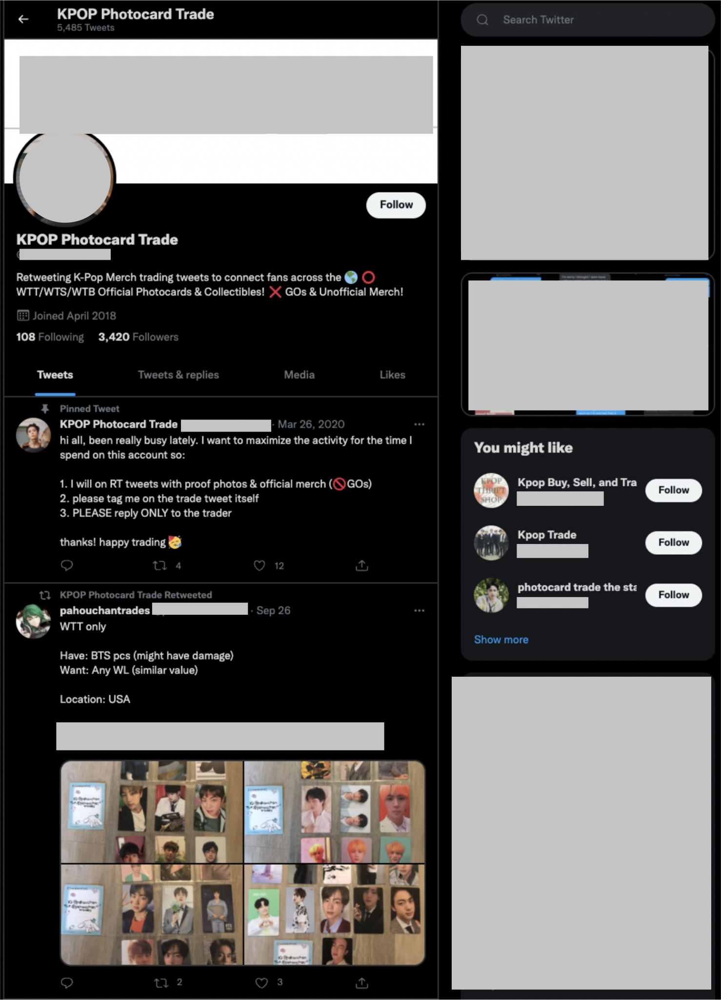
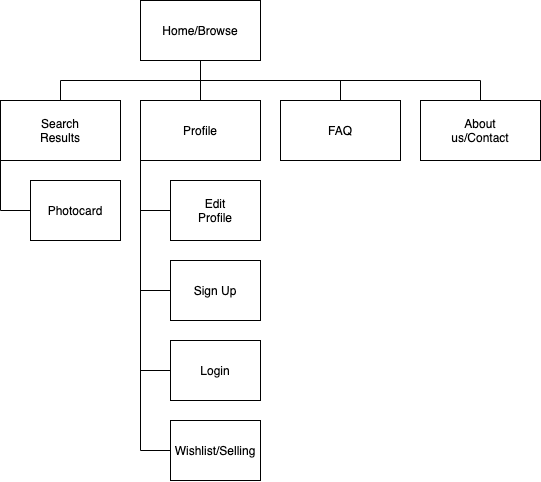
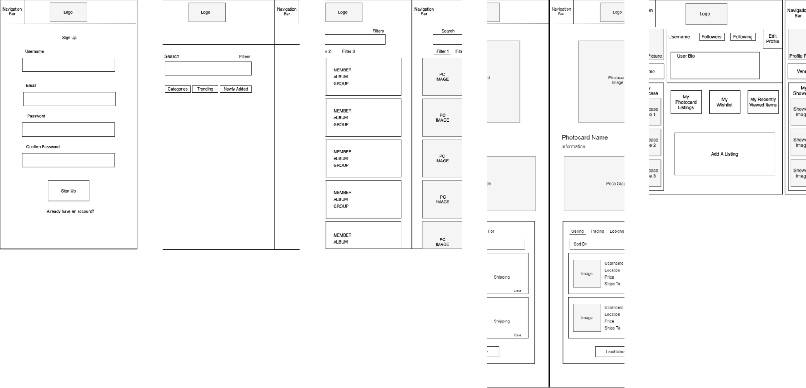
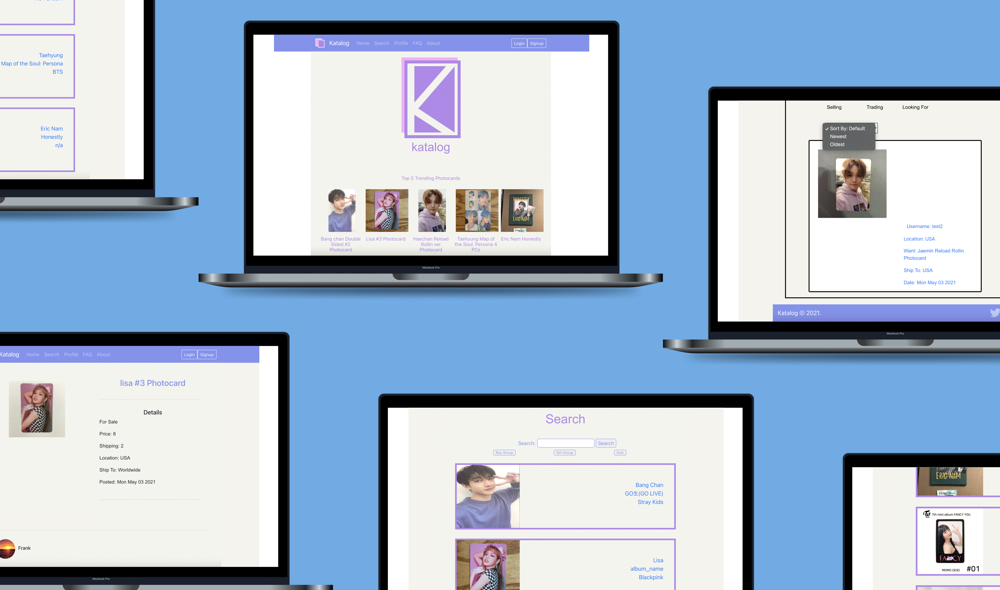

Katalog
Improving the way kpop fans trade and sell photocards in their collections.
Overview
Katalog is a service that aims to provide photocard collectors with a safe platform where they can find information about specific photocards (such as average market price) and buy/sell cards to expand their collections. The website acts as an archive with information on cards that are available on the market so that users can reasonably price and purchase photocards. Each photocard page shows which users are selling and trading that particular card and a graph of current price trends. Users can also create a wishlist on their profile so other users can see what cards they are looking for and possibly prompt a transaction.
Problem
A photocard is a random picture of a member from a Kpop group that is usually included in purchased Kpop albums. This in turn has led to a huge trading market where fans trade for their favorite member's card and try to complete their collections, similar to baseball and pokemon card trading communities. Currently, there is no defined platform where these transactions take place thus usually happening through Twitter, Instagram, Discord, and other social media platforms. This makes it very difficult to find certain photocards as collectors must constantly search in and monitor several various platforms to find the most ideal deal. Katalog was created as a way to alleviate the difficulties of buying/selling by bringing transactions onto one central platform in order to ease and facilitate collectors' experiences.
The Team
- Rachel Lin
- Ashley Sidoryk
- Elizabeth Lee
- Lee Boodoo
- Juana Ng
- David Wang
My Role
I worked on all aspects of the project: UX/UI Design, Frontend Development, Backend Development.
The Goal
Create a platform where Kpop fans can make secure photocard transactions with one another.
Research
To gauge the validity of our problem statement, we decided to take a closer look into the current instated methods being used. We gathered personal statements as well as took to social media to record exactly how these transactions were being executed.
Personal Experience
Some members of our team have personally entered the Twitter photocard trading market and expressed the difficulty of having to look through hundreds of posts on each separate platform when trying to find the best deal and quality. Besides the time inefficiency, there were also many times they questioned the validity of these posts and worried about the risk that came with exchanging personal information in order to make these unofficial transactions. They have also read stories of users who have been scammed by others when trying to buy photocards, something that seems to unfortunately a very common occurance. We then found some of these stories on forums, some of which that warm users of the scamming tactics that are used (impersonating legitmate accounts, sending fake tracking codes, false promising refunds, etc.), as well as some even listing account usernames of those who are known for scamming others. All these records go to show the real security issue when it comes to these unmonitored transactions and though some measures have been created to try to lessen these scams, it is still a very prevelent problem that affects many users.
Social Media
From many accounts dedicated to trading news to users posting their own listings, it is evident that the photocard trading market is huge on these various social media platforms. What we have observed the most however is that this buying and selling transactions are often facilitated by dedicated trading accounts that repost individual user's listings; we can assume this system came about as a way to combat security issues. But with the many users and accounts participating in the market spread across various social media platforms, comes oversaturation resulting in overlapping listings and longer search times. This made is clear that photocard collectors are in need of a more centralized, secure way to do business since currently no such platform for the exists.
Ideation
We wanted to create a platform that centralized this ever-growing market especially with the rise of Kpop popularity worldwide. The main issue we identified was the lack of security that comes with making such monetary transactions with strangers over social media. Not only is there a high risk of scams with the lack of credibility, but also no way to enforce any type of safety and accountability for users. We want Katalog to give fans a more enjoyable experience when searching for the perfect cards they need to complete their collections and feel safer while doing so.
Proposed Ideas
As the platform revolves around a large quantity of photocard content, we wanted to make the user flow as simple as possible in order to not be overwhelming. We thought about the most basic functionalities and pages we wanted Katalog to have before moving on to thinking about the overall design and intricacies of the service. We also discussed some advanced features we may want to incorporate later on to keep in mind as we realized they were not feasible for the MVP but important to the user experience.
-
Katalog
- photocard buying/selling system
- one central platform
- make user experience less complicated
- website, maybe app too?
-
Registration/Login
- Provide name, email, password
- Form verification
- database needed to store account information
- SSO authorization?
-
Home Page
- discovery feature for engagement
- shows top trending photocards
- shows newly added photocards
-
Search
- home search bar
- filtering system with categories
- can find by name, album, group
-
Profile Management
- wishlist section
- shows all current listings
- keep track of which cards in collection
-
Database
- storing username and password
- associated card information
- needs to store price trends
- needs to store all photos
-
Advanced Features
- a rating system for users
- a review section for added credibility
- messaging system for direct contact
- better search/filter algorithm
-
Algorithm
- based on keyword search for cards
- the more keywords a card page contains, the more priority
- sort into catergories based on group type, company, etc.
Concerns and Solutions
Since the main point of concern with the current trading system is security, this was also the prime focus when building Katalog as we needed to have a surefire way to protect users. It also came to our attention that combining the content load of several different platforms would bring about some issues as well. We focused on identifying the potential weak points and finding ways to counteract these potential shortcomings.
- User Credibility: With Katalog being based on user to user interaction, safety is of upmost importance. One way that we determined would uphold security is by allowing users to rate and review others so that they can see if the person they are trading with is credible. In order to avoid users being overcharged or underpricing their cards, we provide a graph for each card that shows current value prices. We also would like to implement a chat feature so that users can directly chat with one another so that specific questions on cards can be answered and they can avoid giving out other personal information such as phone number or social media handles. All these methods help further prevent users from getting scammed as well as keeps them more informed about the transactions they are about to make so that they can get the best deal that works for them.
- Content Overload: Most of the content will be selling, buying, and trading posts along with associated pictures of photocards. To prevent disorganization and overwhelming search attempts, we created a search system that allows users to filter for exactly what they are looking for without having to scroll through unwanted posts. The platform is also designed in a way that shows listing posts by each specific photocard page rather than showing all listings in a feed up front.
- Secure Transactions: In order to uphold accountability, we aim to allow users to make authorized payments through Katalog in order to further combat scammers as well as prevent anyone's personal information from being stolen. We also will require some identify verification method such as two step verification or email verification so that the user has confirm their identity to get into their account and ensure that they are an authentic user that can be held accountable if needed.
- Keeping Track: There is a section where users can keep a wishlist, view all their listings, and see their photocard viewing history. This will help keep user's collections organized.
Design
To begin our design process, we created a site map in order to visualize how we wanted our users to navigate Katalog. We made note of what main pages we wanted to feature on our website and how they would interact with one another in order to achieve a particular desired action.
We then moved on to wireframing the views of Katalog deriving from the created site map. As the search, photocard details/listings, and user profile screens were the most integral aspects of our product, we focused heavily on the functionalities of these features.
The search page allows a user to enter a search result to look for their photocard of interest with the option to filter down their search results. There is also an option to search by categories based on whether they are interested in a boy group or girl group as well as a category based on the entertainment companies. The user can also browse through trending or newly added photocards by clicking on the respective buttons below the search bar. The search results page is displayed when the user uses the search bar on the main page. It allows the user to search by the member on the photocard or by the album and the app will display the results matching that search term. There are also filters to allow the user to further narrow down the search results. The photocard screen allows users to view an image of the photocard along with its information and price over time. Under the price graph, it displays who is selling, trading or looking for that specific photocard. These can also be sorted by newest, oldest, price high to low or low to high. When a user clicks on the listing they want to buy from, it brings them to the user's profile. Along with the typical information usually found on this page, the user profile page also allows the user to display their showcase photocards that they are the most proud to have obtained, cards they are currently searching for, current listings, etc.
Scan the QR code above with your phone to view the prototype or click here to check it out on your computer: Katalog Prototype!
Minimum Viable Product
The MVP is currently deployed here on digital ocean: Katalog!
Project Learnings
There are many aspects and risks that need to be taken into consideration when building an application focused on user interaction and transactions. This ended up being a project that needed even more supporting points than we had initially anticipated. Additional to the features we included in the MVP, there are others such as the messenger and authorized payment systems that need to be implemented in order for Katalog to be even more functional and secure. Another roadblock that we encountered was the amount of content we needed to host. The multitude of posts Katalog needs to be able to hold requires a strong database that is large enough to hold data of such caliber. This is something we would need to look more into when taking this platform to the next level. Though we had many of these obstacles already in mind, the extent to how much they would impact the building process was unknown to us, making it a great learning experience about building an application of this nature.
Key Takeaways
- Keep things simple! Aesthetics are an integral aspect of the success of a product, but there are times when it can take away from or overcomplicate the content of an application if overly prioritzed in the design process. The most significant facet when it comes to building a product is the customer and their experience; thus, creating a tool that is easy to navigate is prime concern. Especially when it comes to the beginning stages, functionality comes before visual appeal. This in turn makes the design enhancements made later on more feasible as well.
- Security can make or break a product! Something users always consider when using an application is if their information and actions on said platform can ensure their safety. If a product cannot guarantee this, customers will not use it! This showed the importance security has, however, it was difficult to implement all the features we wanted to include as user security is a huge feat. There are many specific things to take into consideration such as user authorization, payment information security, database security, etc. For the scope of this MVP, it was impossible to implement all we needed to make Katalog fully secure; thus, this is something that would require more extensive research and time dedication which is great insight that we now have.